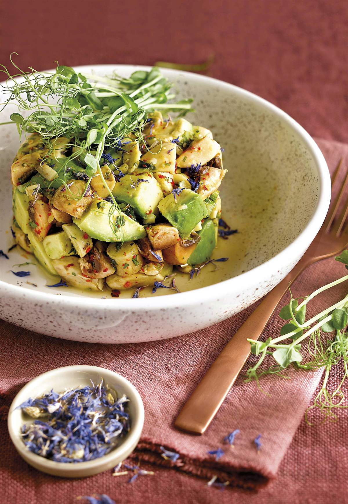

×
Funcion temporalmente fuera de servicio.
Aceptar
Q'RICO
Inicio
Postres
Comidas
Contacto
Inicio Sesión
Cenas
Ceviche de champiñones y palta

Ingredientes
450 g de champiñones
10 ml de zumo de limón
Ají picante a gusto
20 g de apio picadito
Un puñado de hojas de cilantro picadito
45 ml de aceite de oliva
1 cucharadita de sal
1 palta
Preparacion
Triturar aceitunas, alcaparras y anchoas con aceite.
Cocer calabacines, cortarlos en láminas y formar abanicos.
Colocar calabacines en fuente, agregar aceite y queso, gratinar.
Servir los calabacines espolvoreados con pimienta y acompañados de pasta de aceitunas.